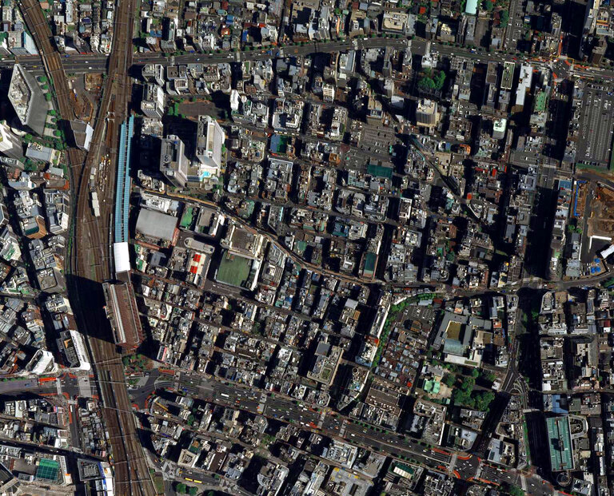
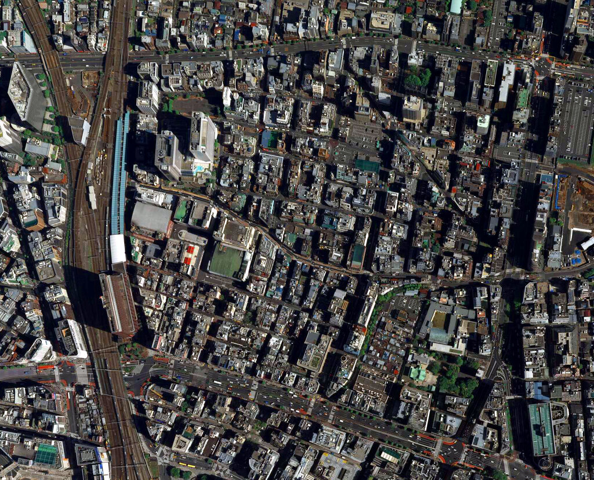
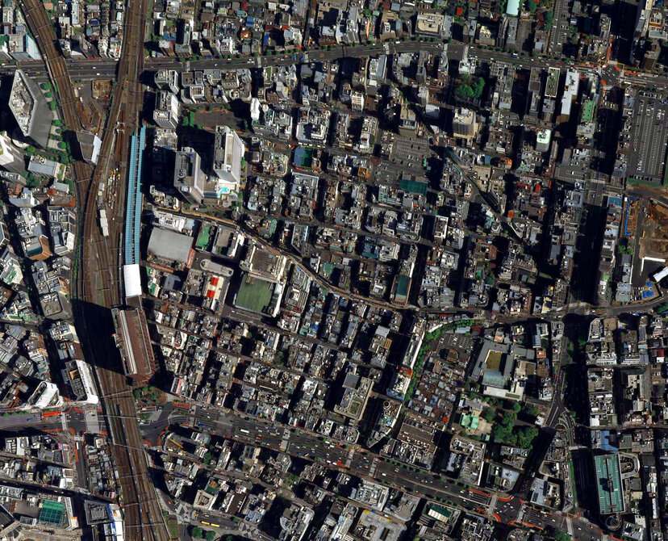

<!DOCTYPE html>
<html lang="en">

<head>
    <meta charset="UTF-8">
    <meta http-equiv="X-UA-Compatible" content="IE=edge">
    <meta name="viewport" content="width=device-width, initial-scale=1.0">
    <title>Responsive Content - Images</title>
    <style>
        img {
            max-width: 100%;
            max-width: 500px;
        }

        /* #hero {
            width: 600px;
            height: 400px;
            background-image: url("tokyo_2048w.jpg");
            background-size: cover;
            background-repeat: no-repeat;
        }

        @media screen and (max-width: 1024px) {
            #hero {
                background-image: url('./rsz_tokyo_1024w.jpg');
            }
        }

        @media screen and (max-width: 768px) {
            #hero {
                background-image: url('./tokyo_768w.jpg');
            }
        }

        @media screen and (max-width: 414px) {
            #hero {
                background-image: url("./tokyo_414w.jpg");
            }
        }

        @media only screen and (min-resolution: 2dppx) and (max-width: 414px) {

            #hero {
                background-image: url("./tokyo_414w@2.jpg");
            }
        }

        @media only screen and (min-resolution: 3dppx) and (max-width: 414px) {

            #hero {
                background-image: url("./tokyo_414w@3.jpg");
            }
        } */
    </style>
</head>

<body>
    <!--  -->
    <!-- <div id="hero"></div> -->
    <!--  -->
    <!--  -->

    <picture>
        <source srcset="tokyo_414w.jpg" media="(max-width:414px )">
        <source srcset="tokyo_768w.jpg" media="(max-width:768px" )>
        <source srcset="rsz_tokyo_1024w.jpg" media="(max-width:1024px" )>
        <source srcset="tokyo_2048w.jpg" media="(max-width:2048px" )>
        

    </picture>
</body>

</html>